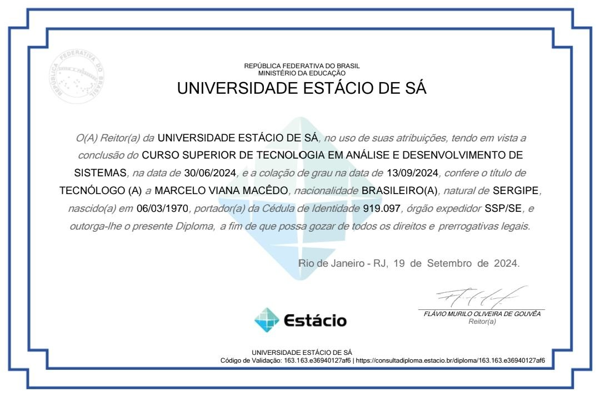

Marcelo
Desenvolvedor Front-end / Analista de suporte técnico TI pleno

Sobre Mim
Analista de Suporte Técnico Pleno | Service Desk | Infraestrutura & Redes | Oracle
Apaixonado por tecnologia desde os anos 90, transformei o entusiasmo daquela época em
uma carreira sólida de resolução de problemas e suporte ao usuário.
Hoje, como Analista de Suporte Técnico Pleno, meu foco é garantir que a tecnologia seja uma facilitadora - e não
um obstáculo — para o negócio.
- Gestão de Chamados: Experiência com SLAs críticos e fluxos de atendimento em Service Desk.
- Infraestrutura: Manutenção preventiva e corretiva de hardware e redes.
- Soft Skills: Foco em comunicação assertiva (Oratória) e organização de processos através da metodologia 5S.
Experiência
Nome da Empresa
2022 - Exago - PresenteResponsável por manter o bom funcionamento dos equipamentos
Habilidades
Certificados
